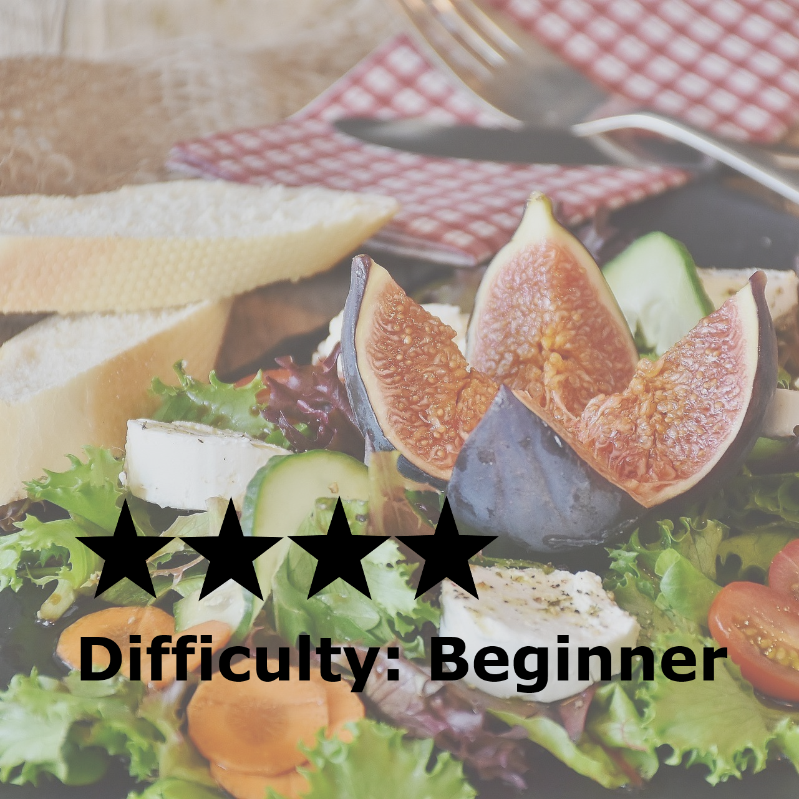
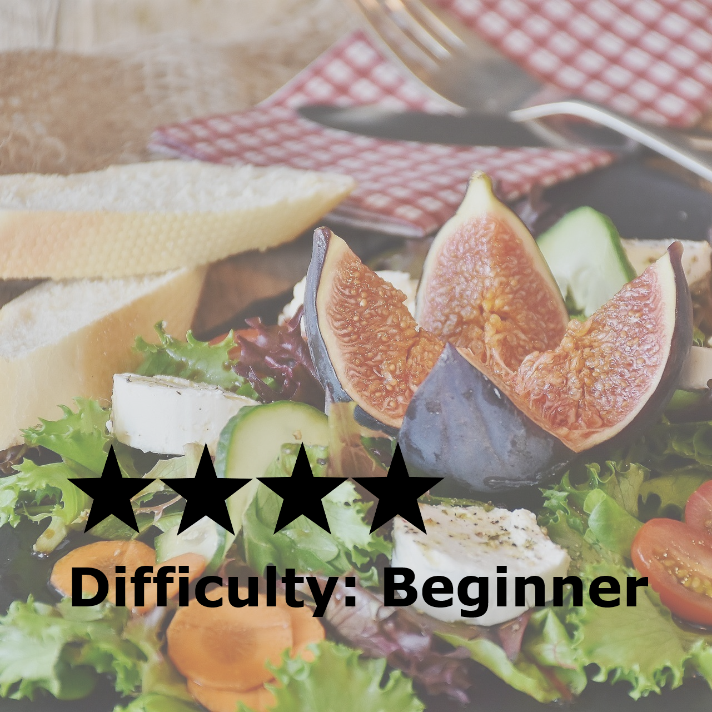

Quick Salads and Stir-Frys
Back to Home
 

Fig and Goats Cheese
A nutritional meal disguished as a punchy salad with fig, goats cheese and unlimited greens.
Click here for more.
Roast Veg and Pesto
Rich roasted vegetables with herby basil pesto, perfectly seasoned and an earthy taste.
Click here for more.
Fresh Greek Salad
Flavours straight from Greece, with refreshing ingredients prepared quick and fresh.
Click here for more.
Sweet Chilli Tofu
Fancy something packed with a sweet and spicy kick? Try out this sweet chilli tofu and stir-fry rice.
Click here for more.
Sesame Spinach
Something simple and nutty is your cup of tea? Three simple ingredients make this spinach a healthy side salad.
Click here for more.
Seitan and Black Bean
This vegan stir-fry makes for a satisfying late night snack, with a sticky sauce and a mix of your favourite veggies.
Click here for more.